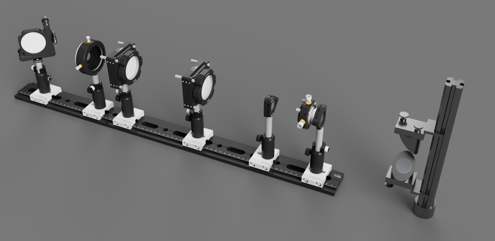

Raises and Expands the Excitation Beam
Project Contributors: Josh Edwards, Seamus Holden
Website by Josh Edwards
Updated: January 2021
The Beam Expansion module's fundamental role is to take the output beam from the Excitation module and both raise and broaden it for input into the Main Body.
Beam height is controlled by the periscope at the start of the module. We have used a Newport rail based periscope for easier alignment than post based designs.
The beam diameter is increased by the -30mm lens and a choice of positive lenses (100mm, 200mm, and 400mm). A longer focal length lens selection will result in a broader beam (larger imaging area) and hence a lower power density which can then be finely adjusted using the iris.
The final turning mirror simply directs the beam into the input port of the Main Body.
This module is best aligned using the output from the excitation module and as such should be built following that module. Alignment can be conducted using rail mounted pinholes on the positive lens mounts and the lens back reflection technique (S. Abrahamsson et al, "MultiFocus Polarization Microscope (MF-PolScope) for 3D polarization imaging of up to 25 focal planes simultaneously," Opt. Express 23, 7734-7754 (2015). Appendix E).